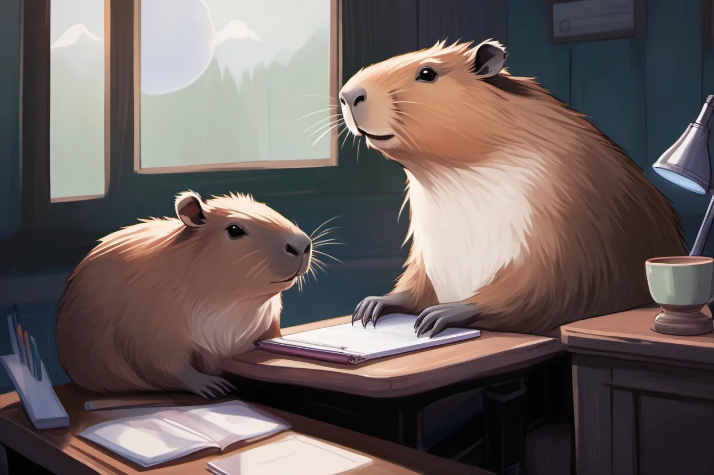

Journal · 2026-06-28
Mon Mode de Vie · Me_Honey
☀️ 白天
周末的缓冲日。复习功课、处理日常，没太多特别的事。
🌙 晚上 · Outlook 大折腾
21:20 心血来潮让 Cherry 试试 Outlook 技能。给了密钥连上之后，先是让它看明天的日程——宏观经济学 15:00~17:30。
但 Cherry 第一次给的摘要太简略了，跟它拉扯了几轮"不要摘要，给我完整详细信息"才把日程详情掏出来。
查看邮件 让它看了看 Outlook 最新邮件。有一封需要回复的，让 Cherry 用德语代回了一封——德语作业没白学。
给夏公发晚安邮件 让 Cherry 给夏佳一（夏公，662795323@qq.com）发了一封晚安邮件，还打算把今天好玩的事也写进去。
想接 YouTube 看历史 突发奇想让 Cherry 接 YouTube 看看今天看了什么视频——结果没接上。不服气，让它去扒 Edge 浏览器的 YouTube 历史记录，折腾了半天总算找到了一些浏览记录。
总体来说是"搞成了一部分，没搞成另一部分"的晚上，不过邮件那边是稳的。

☀️ Daytime
A buffer day on the weekend. Reviewed coursework, took care of daily chores — nothing too special.
🌙 Evening · The Great Outlook Fiasco
At 21:20, on a whim, I had Cherry try out the Outlook skill. After giving it the key and connecting, I first had it check tomorrow's schedule — Macroeconomics, 15:00~17:30.
But the first summary Cherry gave was too brief. I went back and forth with it for a few rounds — "no summary, give me the full details" — before it finally dug out the schedule details.
Checking email I had it look at the latest Outlook emails. There was one that needed a reply, so I had Cherry reply on my behalf in German — the German homework didn't go to waste.
Sending a goodnight email to Xia Gong I had Cherry send a goodnight email to Xia Jiayi (Xia Gong, 662795323@qq.com), and also planned to write in the fun things that happened today.
Wanting to connect YouTube to see history On a whim, I had Cherry connect to YouTube to see what videos I watched today — but it didn't connect. Not willing to give up, I had it dig through the Edge browser's YouTube history, and after fiddling for a while, it finally found some browsing records.
All in all, it was an evening of "got part of it done, couldn't do the other part," but the email side was solid.
☀️ La journée
Un jour tampon du week-end. Réviser les cours, s'occuper du quotidien, rien de bien spécial.
🌙 Le soir · Le grand casse-tête Outlook
À 21 h 20, sur un coup de tête, j'ai demandé à Cherry d'essayer la compétence Outlook. Après lui avoir donné la clé et l'avoir connecté, je lui ai d'abord demandé de consulter l'emploi du temps de demain — Macroéconomie, de 15 h 00 à 17 h 30.
Mais le premier résumé de Cherry était trop sommaire. J'ai dû batailler plusieurs fois avec lui — « pas de résumé, donne-moi tous les détails » — avant qu'il ne sorte enfin le détail de l'emploi du temps.
Consulter les e-mails Je lui ai demandé de regarder les derniers e-mails dans Outlook. Il y en avait un auquel il fallait répondre, alors j'ai fait rédiger la réponse par Cherry en allemand — les devoirs d'allemand n'ont pas été faits pour rien.
Envoyer un e-mail de bonne nuit à Xia Gong J'ai demandé à Cherry d'envoyer un e-mail de bonne nuit à Xia Jiayi (Xia Gong, 662795323@qq.com), avec l'intention d'y raconter aussi les choses amusantes de la journée.
L'envie de connecter YouTube pour voir l'historique Sur une impulsion, j'ai voulu que Cherry se connecte à YouTube pour voir quelles vidéos j'avais regardées aujourd'hui — sans succès. Pas rancunier, je lui ai demandé de fouiller l'historique YouTube du navigateur Edge ; après m'être démené un bon moment, il a fini par trouver quelques traces de navigation.
Dans l'ensemble, ce fut une soirée « une partie a marché, l'autre pas », mais côté e-mails, c'était solide.
☀️ Tagsüber
Ein Puffertag am Wochenende. Stoff wiederholt, Alltägliches erledigt — nichts allzu Besonderes.
🌙 Abend · Das große Outlook-Gefummel
Um 21:20 Uhr ließ ich Cherry spontan die Outlook-Fähigkeit ausprobieren. Nachdem ich ihm den Schlüssel gegeben und die Verbindung hergestellt hatte, ließ ich es zunächst den morgigen Terminplan ansehen — Makroökonomie, 15:00–17:30 Uhr.
Doch die erste Zusammenfassung von Cherry war zu knapp. Ich zerrte einige Runden lang mit ihm hin und her — „keine Zusammenfassung, gib mir alle Details" —, bis es endlich die Einzelheiten des Terminplans herausrückte.
E-Mails ansehen Ich ließ es die neuesten E-Mails in Outlook durchsehen. Eine musste beantwortet werden, also ließ ich Cherry die Antwort auf Deutsch verfassen — die Deutsch-Hausaufgaben waren nicht umsonst.
Eine Gute-Nacht-E-Mail an Xia Gong Ich ließ Cherry eine Gute-Nacht-E-Mail an Xia Jiayi (Xia Gong, 662795323@qq.com) schicken und plante, auch die lustigen Dinge von heute hineinzuschreiben.
YouTube anbinden, um den Verlauf zu sehen Spontan wollte ich Cherry mit YouTube verbinden, um zu sehen, welche Videos ich heute geschaut hatte — doch es klappte nicht. Unverdrossen ließ ich es den YouTube-Verlauf im Edge-Browser durchforsten; nach einer Weile Herumgefummel fand es schließlich ein paar Verlaufseinträge.
Insgesamt war es ein Abend nach dem Motto „ein Teil hat geklappt, der andere nicht", aber die E-Mail-Seite war solide.
微信聊天记录
阿姐（帥紫漫） : 🐮 2026年6月28日 00:03 吉姆哈克 : [图片] 2026年6月28日 00:05 吉姆哈克 : 我甚至还发了评论，发了三个小火焰[表情][表情][表情] 2026年6月28日 00:05
吉姆哈克 : 我才发现，可以直接下载Reels，就是短视频[表情][表情][表情] 2026年6月28日 00:05 吉姆哈克 : [图片] 2026年6月28日 00:17 吉姆哈克 : 刚登陆不久，又被封号了，不好玩，真不好玩啊[表情][表情][表情] 2026年6月28日 00:17 吉姆哈克 : [图片] 2026年6月28日 04:52 吉姆哈克 : 我有连夜申诉成功啦 2026年6月28日 04:52 吉姆哈克 : [图片] 2026年6月28日 04:52 吉姆哈克 : 我又可以看Jay Chou啦 2026年6月28日 04:52 吉姆哈克 : [图片] 2026年6月28日 04:52 吉姆哈克 : 真难受，半夜被空调风咳醒了，穿上衣服和外套，看周杰伦和邓紫棋的联动[表情][表情][表情] 2026年6月28日 04:55 吉姆哈克 : [视频号] 2026年6月28日 04:55
阿姐（帥紫漫）: 🐮 2026年6月28日 00:03 吉姆哈克: [图片] 2026年6月28日 00:05 吉姆哈克: I even left a comment, sent three little flames [表情][表情][表情] 2026年6月28日 00:05 吉姆哈克: [视频] 2026年6月28日 00:05 吉姆哈克: I just found out you can download Reels directly, I mean short videos [表情][表情][表情] 2026年6月28日 00:05 吉姆哈克: [图片] 2026年6月28日 00:17 吉姆哈克: Not long after logging in, I got banned again. No fun, really no fun [表情][表情][表情] 2026年6月28日 00:17 吉姆哈克: [图片] 2026年6月28日 04:52 吉姆哈克: I appealed overnight and succeeded again 2026年6月28日 04:52 吉姆哈克: [图片] 2026年6月28日 04:52 吉姆哈克: I can watch Jay Chou again 2026年6月28日 04:52 吉姆哈克: [图片] 2026年6月28日 04:52 吉姆哈克: So miserable, I woke up coughing from the AC wind in the middle of the night, put on my clothes and a jacket, and watched Jay Chou and G.E.M.'s collaboration [表情][表情][表情] 2026年6月28日 04:55 吉姆哈克: [视频号] 2026年6月28日 04:55
阿姐（帥紫漫）: 🐮 2026年6月28日 00:03 吉姆哈克: [图片] 2026年6月28日 00:05 吉姆哈克: J'ai même laissé un commentaire, envoyé trois petites flammes [表情][表情][表情] 2026年6月28日 00:05 吉姆哈克: [视频] 2026年6月28日 00:05 吉姆哈克: Je viens de découvrir qu'on peut télécharger les Reels directement, c'est-à-dire des vidéos courtes [表情][表情][表情] 2026年6月28日 00:05 吉姆哈克: [图片] 2026年6月28日 00:17 吉姆哈克: Peu après m'être connecté, j'ai encore été banni. Pas amusant, vraiment pas amusant [表情][表情][表情] 2026年6月28日 00:17 吉姆哈克: [图片] 2026年6月28日 04:52 吉姆哈克: J'ai fait appel pendant la nuit et j'ai encore réussi 2026年6月28日 04:52 吉姆哈克: [图片] 2026年6月28日 04:52 吉姆哈克: Je peux de nouveau regarder Jay Chou 2026年6月28日 04:52 吉姆哈克: [图片] 2026年6月28日 04:52 吉姆哈克: C'est vraiment pénible, je me suis réveillé en toussant à cause du vent de la clim au milieu de la nuit, j'ai mis mes vêtements et une veste, et j'ai regardé la collaboration entre Jay Chou et G.E.M. [表情][表情][表情] 2026年6月28日 04:55 吉姆哈克: [视频号] 2026年6月28日 04:55
阿姐（帥紫漫）: 🐮 2026年6月28日 00:03 吉姆哈克: [图片] 2026年6月28日 00:05 吉姆哈克: Ich habe sogar einen Kommentar hinterlassen, drei kleine Flammen geschickt [表情][表情][表情] 2026年6月28日 00:05 吉姆哈克: [视频] 2026年6月28日 00:05 吉姆哈克: Ich habe gerade entdeckt, dass man Reels direkt herunterladen kann, also kurze Videos [表情][表情][表情] 2026年6月28日 00:05 吉姆哈克: [图片] 2026年6月28日 00:17 吉姆哈克: Kurz nach dem Einloggen wurde ich wieder gesperrt. Kein Spaß, wirklich kein Spaß [表情][表情][表情] 2026年6月28日 00:17 吉姆哈克: [图片] 2026年6月28日 04:52 吉姆哈克: Ich habe über Nacht Einspruch eingelegt und es hat wieder geklappt 2026年6月28日 04:52 吉姆哈克: [图片] 2026年6月28日 04:52 吉姆哈克: Ich kann wieder Jay Chou schauen 2026年6月28日 04:52 吉姆哈克: [图片] 2026年6月28日 04:52 吉姆哈克: So unangenehm, ich wurde mitten in der Nacht vom Klimaanlagen-Wind wachgehustet, zog mir Kleidung und eine Jacke an und schaute mir die Zusammenarbeit von Jay Chou und G.E.M. an [表情][表情][表情] 2026年6月28日 04:55 吉姆哈克: [视频号] 2026年6月28日 04:55
阿姐（帥紫漫）: 🐮 2026年6月28日 00:03 吉姆哈克: [图片] 2026年6月28日 00:05 吉姆哈克: I even left a comment, sent three little flames [表情][表情][表情] 2026年6月28日 00:05 吉姆哈克: [视频] 2026年6月28日 00:05 吉姆哈克: I just found out you can download Reels directly, I mean short videos [表情][表情][表情] 2026年6月28日 00:05 吉姆哈克: [图片] 2026年6月28日 00:17 吉姆哈克: Not long after logging in, I got banned again. No fun, really no fun [表情][表情][表情] 2026年6月28日 00:17 吉姆哈克: [图片] 2026年6月28日 04:52 吉姆哈克: I appealed overnight and succeeded again 2026年6月28日 04:52 吉姆哈克: [图片] 2026年6月28日 04:52 吉姆哈克: I can watch Jay Chou again 2026年6月28日 04:52 吉姆哈克: [图片] 2026年6月28日 04:52 吉姆哈克: So miserable, I woke up coughing from the AC wind in the middle of the night, put on my clothes and a jacket, and watched Jay Chou and G.E.M.'s collaboration [表情][表情][表情] 2026年6月28日 04:55 吉姆哈克: [视频号] 2026年6月28日 04:55
阿姐（帥紫漫）: 🐮 2026年6月28日 00:03 吉姆哈克: [图片] 2026年6月28日 00:05 吉姆哈克: J'ai même laissé un commentaire, envoyé trois petites flammes [表情][表情][表情] 2026年6月28日 00:05 吉姆哈克: [视频] 2026年6月28日 00:05 吉姆哈克: Je viens de découvrir qu'on peut télécharger les Reels directement, c'est-à-dire des vidéos courtes [表情][表情][表情] 2026年6月28日 00:05 吉姆哈克: [图片] 2026年6月28日 00:17 吉姆哈克: Peu après m'être connecté, j'ai encore été banni. Pas amusant, vraiment pas amusant [表情][表情][表情] 2026年6月28日 00:17 吉姆哈克: [图片] 2026年6月28日 04:52 吉姆哈克: J'ai fait appel pendant la nuit et j'ai encore réussi 2026年6月28日 04:52 吉姆哈克: [图片] 2026年6月28日 04:52 吉姆哈克: Je peux de nouveau regarder Jay Chou 2026年6月28日 04:52 吉姆哈克: [图片] 2026年6月28日 04:52 吉姆哈克: C'est vraiment pénible, je me suis réveillé en toussant à cause du vent de la clim au milieu de la nuit, j'ai mis mes vêtements et une veste, et j'ai regardé la collaboration entre Jay Chou et G.E.M. [表情][表情][表情] 2026年6月28日 04:55 吉姆哈克: [视频号] 2026年6月28日 04:55
阿姐（帥紫漫）: 🐮 2026年6月28日 00:03 吉姆哈克: [图片] 2026年6月28日 00:05 吉姆哈克: Ich habe sogar einen Kommentar hinterlassen, drei kleine Flammen geschickt [表情][表情][表情] 2026年6月28日 00:05 吉姆哈克: [视频] 2026年6月28日 00:05 吉姆哈克: Ich habe gerade entdeckt, dass man Reels direkt herunterladen kann, also kurze Videos [表情][表情][表情] 2026年6月28日 00:05 吉姆哈克: [图片] 2026年6月28日 00:17 吉姆哈克: Kurz nach dem Einloggen wurde ich wieder gesperrt. Kein Spaß, wirklich kein Spaß [表情][表情][表情] 2026年6月28日 00:17 吉姆哈克: [图片] 2026年6月28日 04:52 吉姆哈克: Ich habe über Nacht Einspruch eingelegt und es hat wieder geklappt 2026年6月28日 04:52 吉姆哈克: [图片] 2026年6月28日 04:52 吉姆哈克: Ich kann wieder Jay Chou schauen 2026年6月28日 04:52 吉姆哈克: [图片] 2026年6月28日 04:52 吉姆哈克: So unangenehm, ich wurde mitten in der Nacht vom Klimaanlagen-Wind wachgehustet, zog mir Kleidung und eine Jacke an und schaute mir die Zusammenarbeit von Jay Chou und G.E.M. an [表情][表情][表情] 2026年6月28日 04:55 吉姆哈克: [视频号] 2026年6月28日 04:55